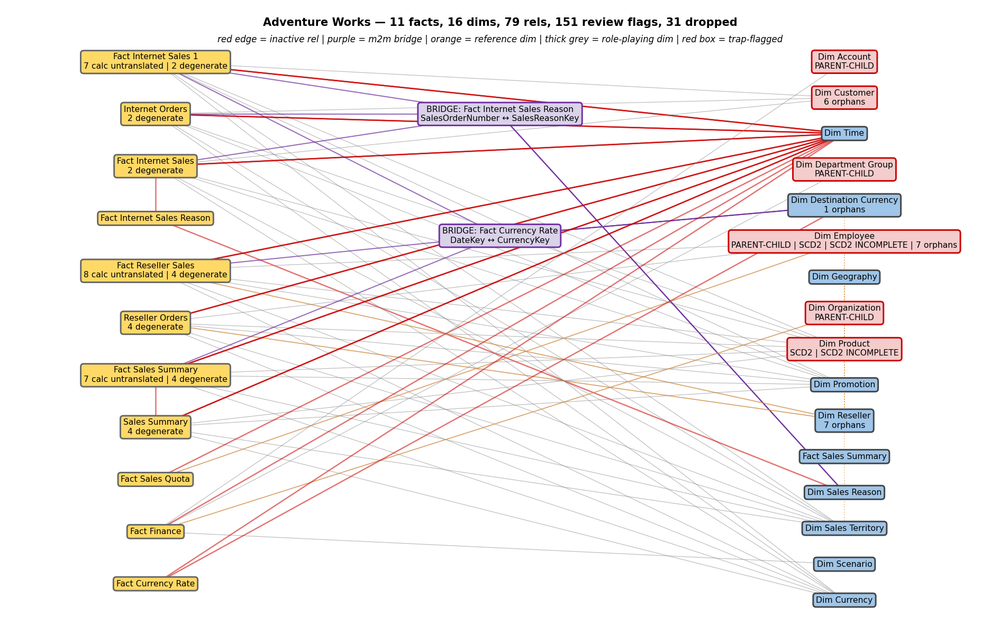
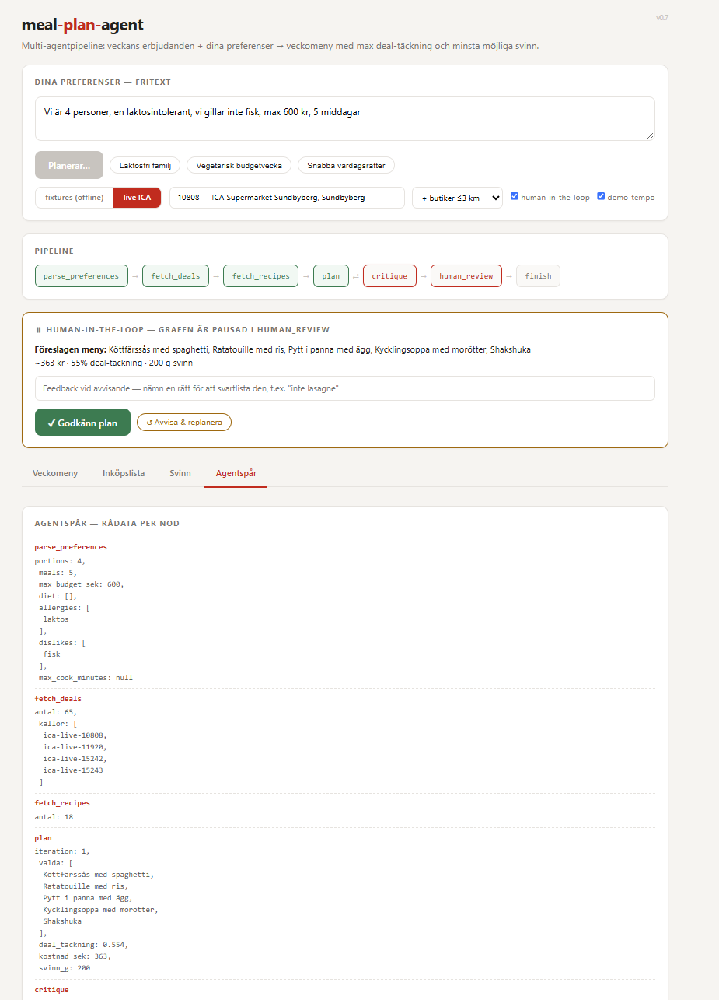
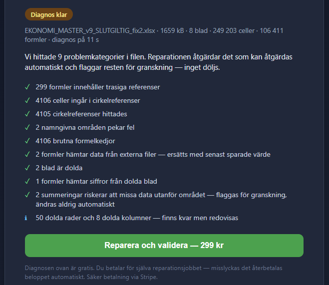
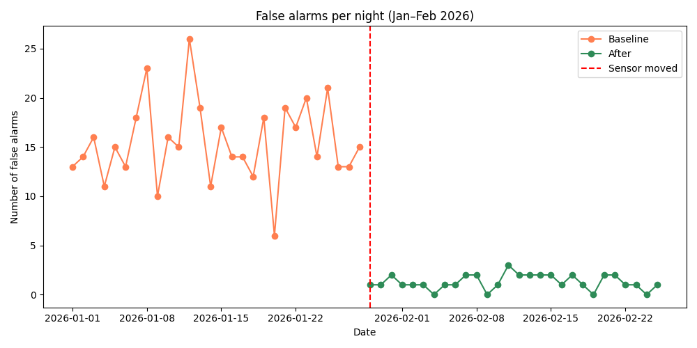
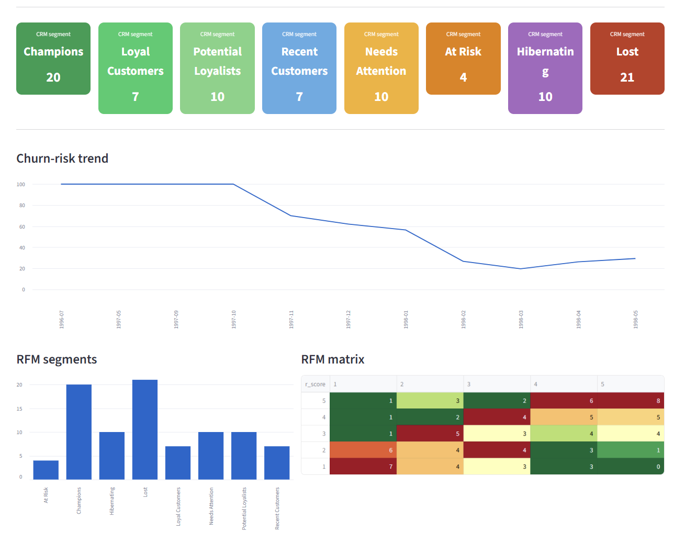
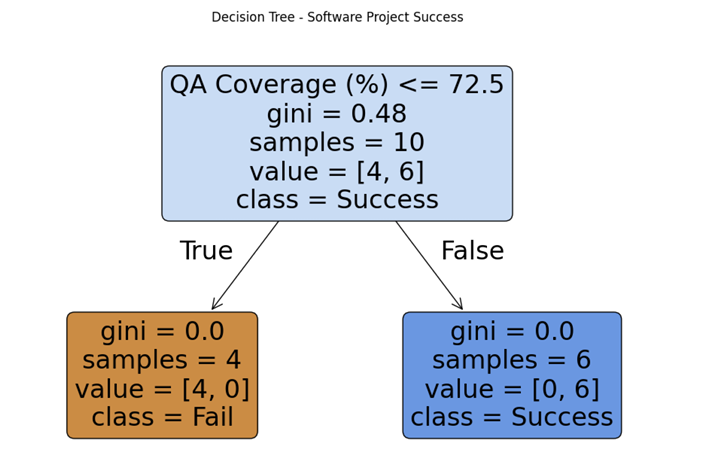
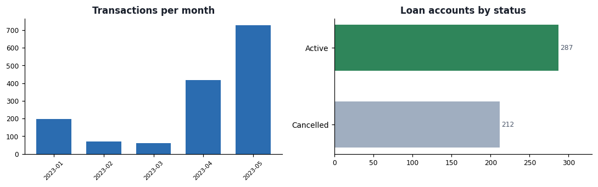
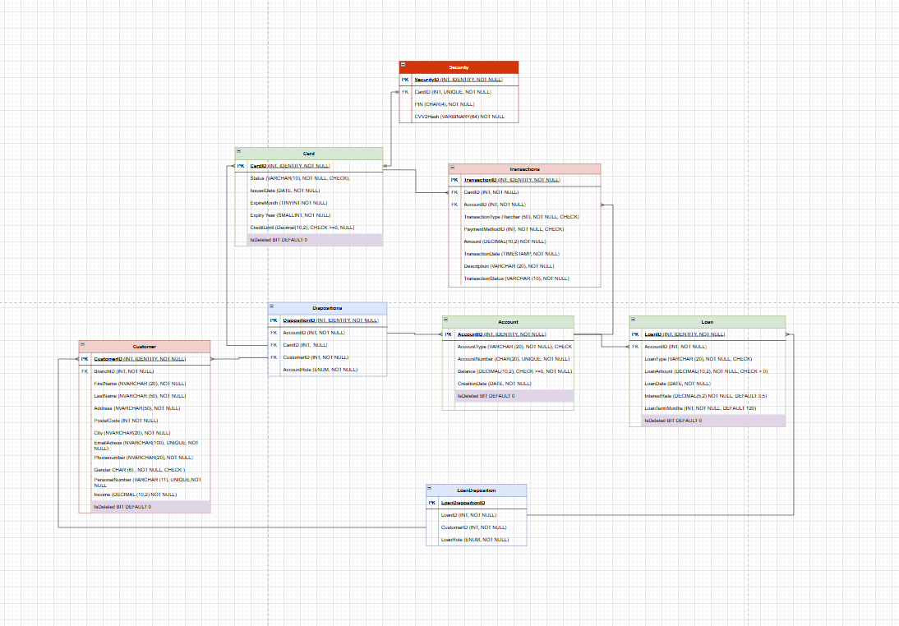

CubeTriage
A migration-assessment engine for legacy SSAS cubes: one exported file in, and out comes a proposed star schema, a quantified complexity report and an Excel workbook where every uncertainty is a reviewable decision. Validated on Microsoft's own Adventure Works Enterprise cube — 120 human-review items found in seconds, not weeks.
PythonSSAS/OLAPData migrationStar schemaHITL
View project

QueryTriage
The same triage engine pointed at SQL spaghetti: a folder of .sql files in, and out comes a layered dependency DAG, a quantified risk report and a review workbook. Validated on Microsoft's real WideWorldImporters database — 214 objects, 448 edges and 218 findings in 22 seconds, with honest parsed-vs-inferred provenance.
PythonsqlglotT-SQLDependency DAGHITL
View project

PackageTriage
The same triage engine pointed at SSIS: a .dtsx package in, and out comes a layered control-flow graph, a quantified risk report and a review workbook. Validated on Microsoft's real WideWorldImporters ETL package — 123 objects, 236 edges and 43 findings in ~3 seconds, including the expression-driven and project-connection traps that stall re-platforms.
PythonSSIS/.dtsxControl flowETL migrationHITL
View project

Meal Plan Agent
A graph-orchestrated multi-agent pipeline in LangGraph: Swedish free-text preferences + this week's real ICA offers → a weekly menu optimised for maximum deal coverage and minimum fresh-food waste. Critic↔planner feedback loop, optional human-in-the-loop pause via interrupt + checkpointing, and honest failure when a budget is impossible.
PythonLangGraphMulti-agentHITLFastAPI + SSE
View project

Kalkylakuten
A live commercial service for broken Excel files: free diagnosis, then a repair pipeline that returns a validated, clean .xlsx plus a changelog listing every touched cell — 299 kr via Stripe, refunded automatically if repair fails. Deployed on Azure Container Apps with Blob Storage job state — infrastructure as code in Bicep. Built end-to-end and run as a sole proprietorship.
PythonFastAPIStripeAzure Container AppsBicep IaCLive product
View project

Alarm Analysis
A BI analysis of false alarms in elderly care. The result: roughly 92% fewer disruptive alarms — and a clear explanation of what saves both time and worry for staff.
StreamlitPythonBI
View project

Northwind AI Agents
A hybrid LLM pipeline with a CRM analytics layer on top: deterministic Python computes everything — star schema, RFM segmentation, churn risk, next-best-action — while the LLM writes the narrative and answers plain-English questions via tool calls. An orchestration layer logs every run: audit trail, pipeline health and a meta log of the questions asked.
PythonAgentic AICRMLLM
View project

Statistical Programming & ML
Regression, trees, k-means by hand, PCA and SVM across four datasets — but the real lesson was the metrics: train R² 0.94 vs test R² −25 on ten rows. Dataset size constrains what a model can prove more than algorithm choice does.
Pythonscikit-learnML
View project

Banking ETL Pipeline
A full pipeline from raw banking CSVs through Python cleaning and a star schema to a finished Power BI report — plus the same flow as an SSIS package.
PythonETLPower BI
View project

Bank Database in T-SQL
A bank where the business rules live in the database itself: no loan without a credit check, and the monthly payment job is idempotent — run it a hundred times and every payment still posts exactly once.
SQLT-SQLDatabase design
View project